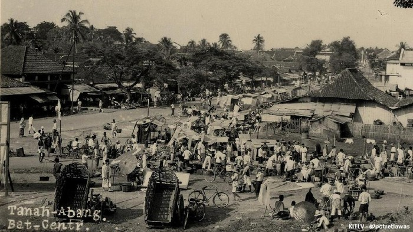

Museum Pijar hadir sebagai ruang untuk mengenal, menghayati, dan merayakan sejarah perjuangan bangsa Indonesia. Melalui koleksi arsip, artefak, dan kisah para pahlawan, kami mengajak setiap pengunjung untuk menelusuri jejak kemerdekaan yang penuh pengorbanan.
-

SEDANG DALAM PENGEMBANGAN. SEGERA HADIR
Museum Pijar
Menerangi perjalanan bangsa melalui kisah para pahlawan dan peristiwa bersejarah Indonesia.
-
DALAM PENGEMBANGAN. SEGERA HADIR
Tokoh-Tokoh Pergerakan Nasional
Mengenal lebih dekat para pejuang yang membentuk Indonesia melalui karya, pemikiran, dan pengorbanan mereka.
-
WEBSITE EDUKASI SEJARAH. SEGERA HADIR
Warisan Sejarah Bangsa
Arsip, artefak, dan kisah otentik yang menjadi saksi bisu perjuangan rakyat Indonesia meraih kemerdekaan.